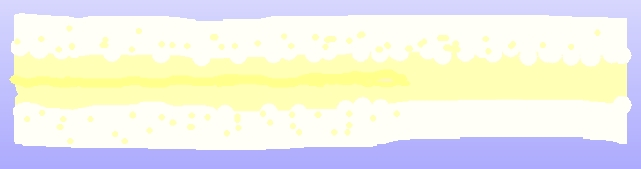
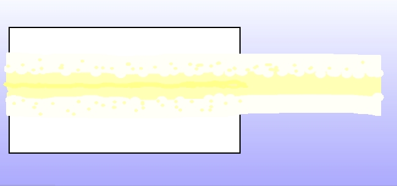
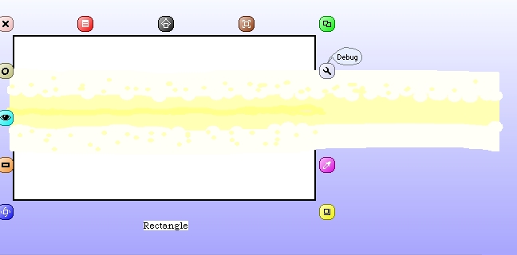
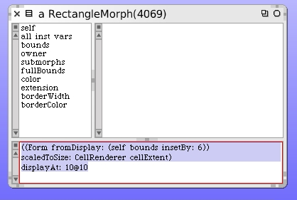
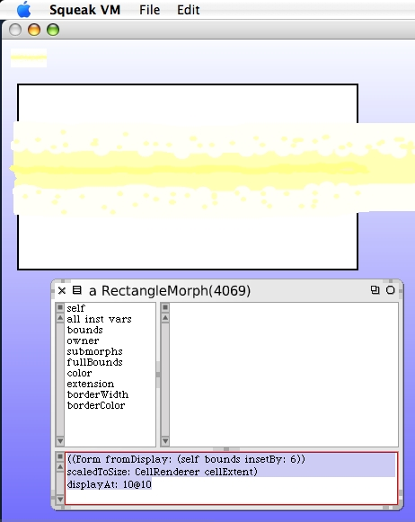

I had some fun with using smaller brush sizes and some alternate brighter colors and dabbled some more until I got something that looked like this.
After clicking on "Keep" I dragged the new sketch morph over on top of the white panel created earlier. I also resized it a bit to make it thinner. Try to center it as best you can so that the deeper yellow part appears to be vertically centered within the panel.
Command-Click on the panel rectangle morph and open up an inspector from the debug halo.
In the rectangle morph inspector type the following code. We're going to create a new Form by capturing the display as it looks inside the panel.
When you execute this code in the inspector you should see a small cell-scaled reproduction of our laser beam in the upper left corner of your Squeak environment window.
